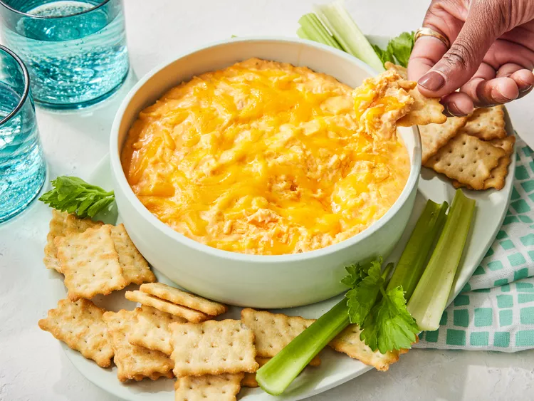

Home
Buffalo Chicken Dip

This tangy, creamy Buffalo chicken dip tastes just like Buffalo chicken wings! Perfect for parties and game day, this chicken dip is best served hot with crackers and celery sticks. Everyone loves the results!
Ingredients
- Chicken
2 (10 ounce) cans chunk chicken, drained
- Cream Cheese
2 (8 ounce) packages cream cheese, softened
- Ranch Dressing
1 cup ranch dressing
- Hot Sauce
¾ cup hot pepper sauce (such as Frank's RedHot)
- Cheese
1 ½ cups shredded Cheddar cheese
- Celery
1 bunch celery, cut into 4-inch pieces
- Crackers
1 (8 ounce) box chicken-flavored crackers
Steps
- Gather all ingredients.
- Heat chicken and hot pepper sauce in a skillet over medium heat until heated through, 3 to 5 minutes. Stir in cream cheese and ranch dressing. Cook and stir until well blended and warm, 3 to 5 minutes.
- Mix in 1/2 of the Cheddar cheese, and transfer the mixture to a slow cooker. Sprinkle the remaining cheese over top.
- Cover and cook on Low until dip is hot and bubbly, about 35 minutes.
- Serve with celery sticks and crackers.